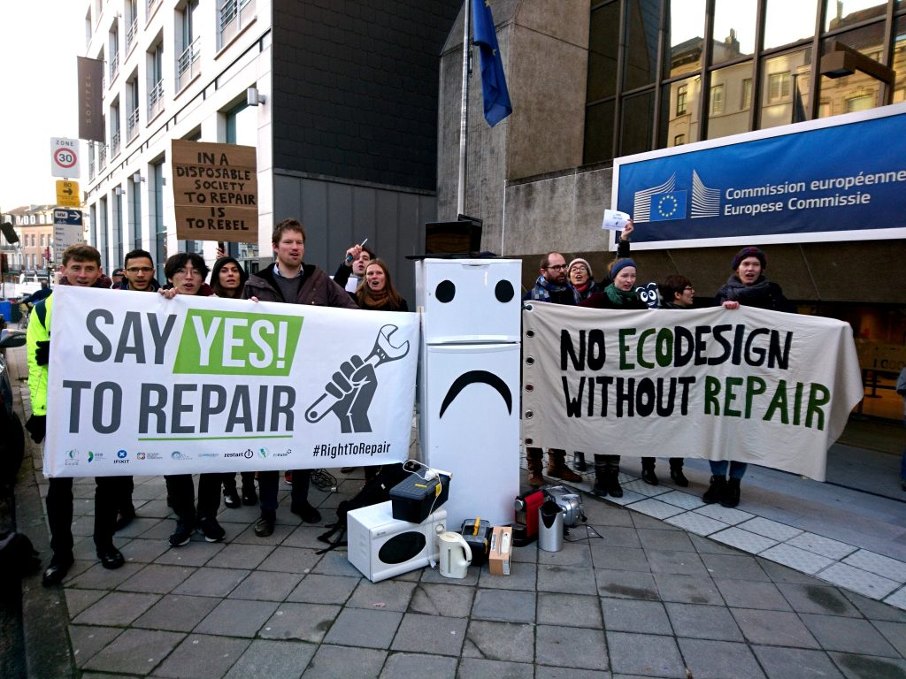
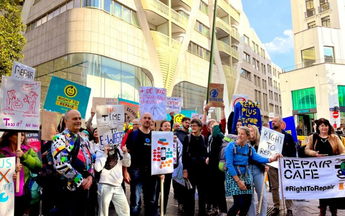

El despertar ciudadano
Protestas y movimientos sociales
En los últimos años, miles de personas han salido a las calles para
protestar contra la
obsolescencia programada y el modelo de consumo desmedido.
Estas manifestaciones buscan denunciar cómo las grandes empresas diseñan productos con una vida útil
corta
para generar más beneficios a costa del planeta y de los consumidores.
Movimientos como "Right to Repair" (Derecho a reparar) en Estados Unidos y Europa
han logrado una gran visibilidad internacional.
Este movimiento defiende el derecho de los consumidores a reparar sus dispositivos sin
depender de servicios oficiales o piezas restringidas.
Gracias a su presión, varios países han aprobado leyes que obligan a los fabricantes a facilitar
manuales, herramientas y piezas de repuesto.
En la Unión Europea, por ejemplo, se está impulsando el
Plan de Derecho a Reparar.

Impacto medioambiental y conciencia ecológica
Las manifestaciones también ponen de relieve el enorme impacto de la obsolescencia programada
en el medio ambiente.
Cada año, millones de toneladas de residuos electrónicos terminan en vertederos,
contaminando suelos y aguas.
Los activistas exigen una producción más sostenible y una economía circular que
promueva la reparación, reutilización y reciclaje.

Ejemplos recientes
Algunas manifestaciones destacadas son:
- Protestas en Francia contra la reducción de la durabilidad de los smartphones.
- Campañas en Alemania por la extensión del periodo de garantía.
- Protestas en Estados Unidos lideradas por colectivos de reparación local.